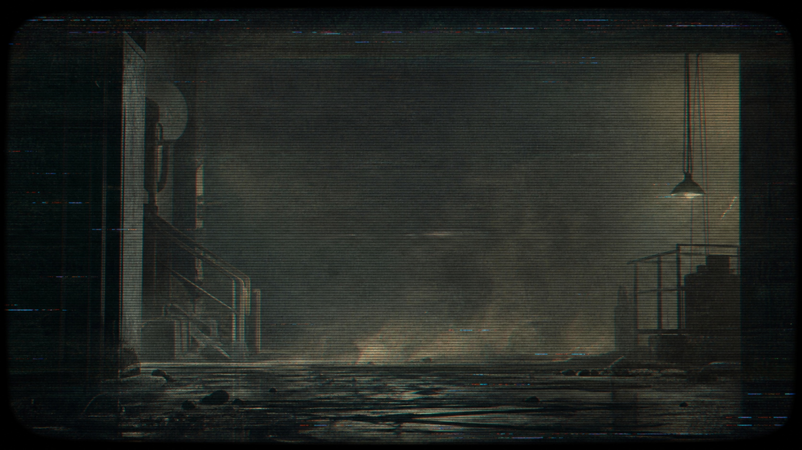

TRANSMISSION_ARCHIVE01
Glitch video loops assembled from environmental footage, temporal compression, and CRT feedback.

SOURCE://RECOVERED_SIGNAL STATUS://PARTIAL
SIGNAL RECONSTRUCTION STUDIES
A quiet electronic archive for glitch video art, CRT installation studies, projection systems, environmental footage, and cybersecurity research concerned with signal, failure, telemetry, memory, and reconstruction.
INDEX://MEDIA_OBJECTS
Selected moving-image and installation works staged as recovered artifacts.
Glitch video loops assembled from environmental footage, temporal compression, and CRT feedback.
Installation stills exploring persistence, scan drift, and luminous memory.
Recovered landscape fragments processed through unstable signal chains.
Projection mapping sketches where surfaces behave like damaged receiving instruments.
CATALOG://TRANSMISSION_LOG
Looping video artifact, 00:03:42, 4:3 transfer.
STATUS://ONLINEGlitch photograph, CRT capture, amber channel instability.
STATUS://PARTIALResearch note on overlays, threat signals, and media archaeology.
STATUS://DRAFTProjection study using field footage and generative degradation.
STATUS://RECOVEREDNight capture pushed through channel separation and phosphor residue.
STATUS://INDEXEDWorking notes for translating forensic timelines into media-art systems.
STATUS://QUEUEPROCESS://REAL_TIME
Generative visuals, live capture chains, CRT routing, projection mapping, and telemetry overlays designed for installation, performance, and site-responsive environments.
LAB://SIGNAL_RECONSTRUCTION
Small experiments where technical systems are treated as image engines and memory devices.
Network metadata translated into slow visual pressure: drift, density, loss, and intermittent bright failures.
Broken frame interpretation as an aesthetic method: compression edges, sync loss, and temporal misreadings.
Installation notes for pairing sensor readouts, CRT glow, and projection surfaces in quiet industrial space.
NOTES://SIGNAL_STUDIES
Cybersecurity writing framed through systems, traces, reconstruction, and compromised signal.
How logs, packet traces, and sensor noise become historical material.
RESEARCH_002A shared vocabulary for exploit surfaces and damaged broadcast aesthetics.
RESEARCH_003Incident response as signal recovery, timeline repair, and forensic montage.
IDENTITY://ARTIST_RECORD
[VANECKZERO] works across glitch photography, video synthesis, live generative systems, CRT installation, projection, and cybersecurity research. The archive treats damaged media, telemetry, and environmental recordings as unstable evidence: signals that can be studied, repaired, misread, and transformed.